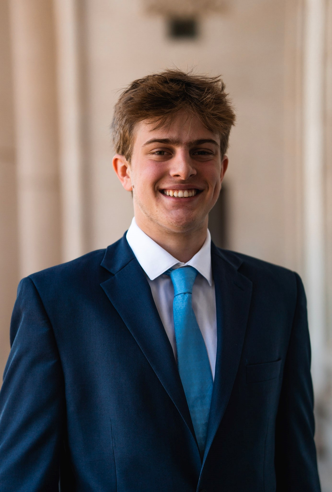

Cameron Quilici

Texas A&M alum, Math and Computer Science.
Interests: ML systems, performance engineering, machine learning.
GitHub
LinkedIn
cameron@semianalysis.com
cjquilici@gmail.com
Experience
SemiAnalysis, Member of Technical Staff, 2025 - present
- Build and maintain InferenceX, an open-source, continuously updated LLM inference benchmark across NVIDIA and AMD GPUs.
- Benchmark and tune inference engines (vLLM, SGLang, Dynamo) on GPU clusters, including disaggregated serving.
- Co-write SemiAnalysis articles on LLM inference performance and economics.
Hewlett Packard Enterprise, Software Engineer, 2024 - 2025
- Built a platform for serving LLMs at scale on Kubernetes with KServe, integrating inference engines like vLLM, SGLang, and TensorRT-LLM.
- Worked on AI inference infrastructure after moving teams in late 2024.
Determined AI (acquired by HPE), Software Engineer Intern, summer 2023
- Worked on running containerized ML workloads on HPC schedulers (Slurm, PBS).
- Improved CI/CD infrastructure and test performance on cloud VMs.
- Worked with GCP, Terraform, Packer, and Ansible.
Determined AI (acquired by HPE), Software Engineer Intern, summer 2022
- Worked on distributed ML training on HPC clusters.
- Built developer tooling for remote job submission and Slurm integration.
- Worked with Docker, Kubernetes, Go, REST APIs, and CI/CD.
Texas A&M University, Undergraduate Research Assistant, 2023 - 2024